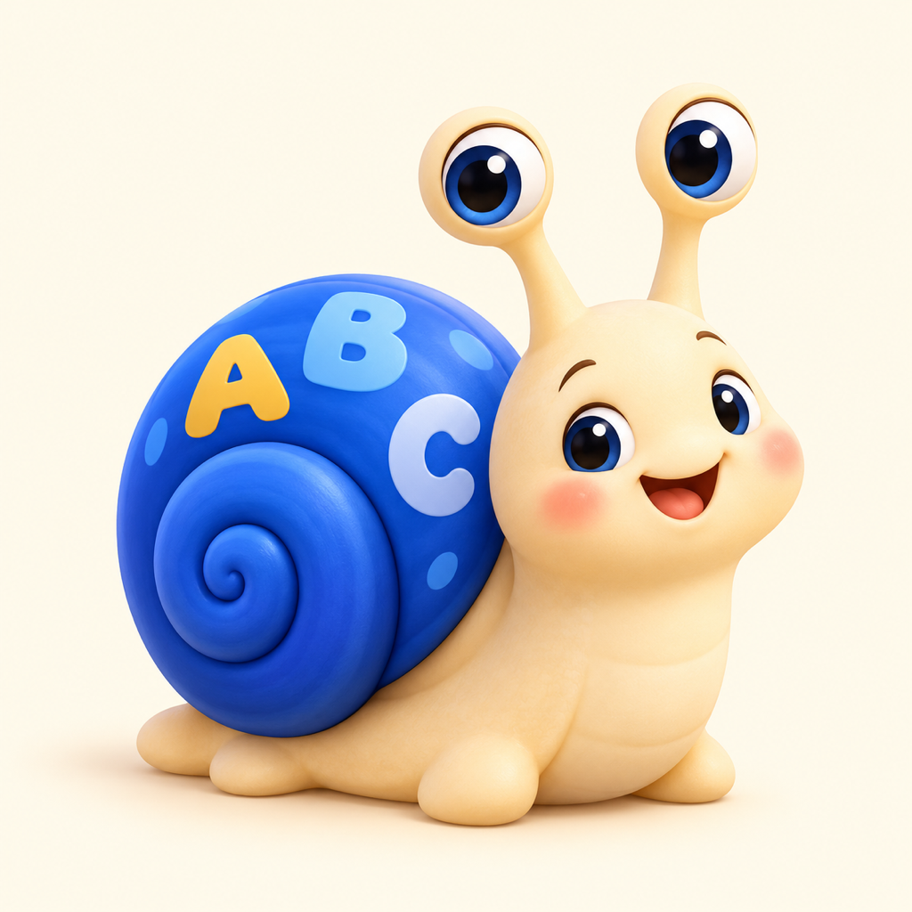
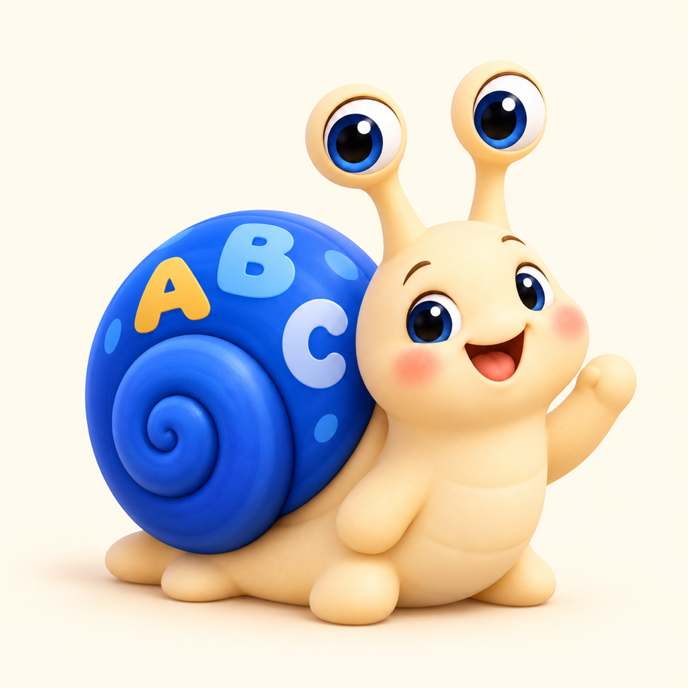
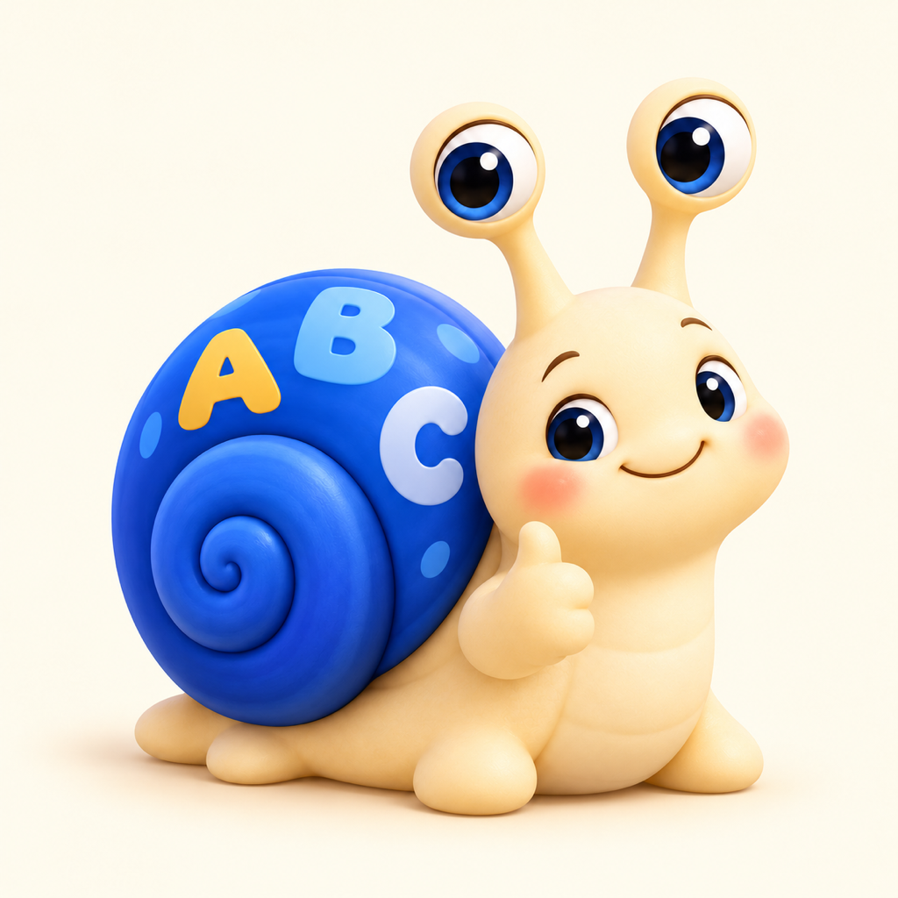
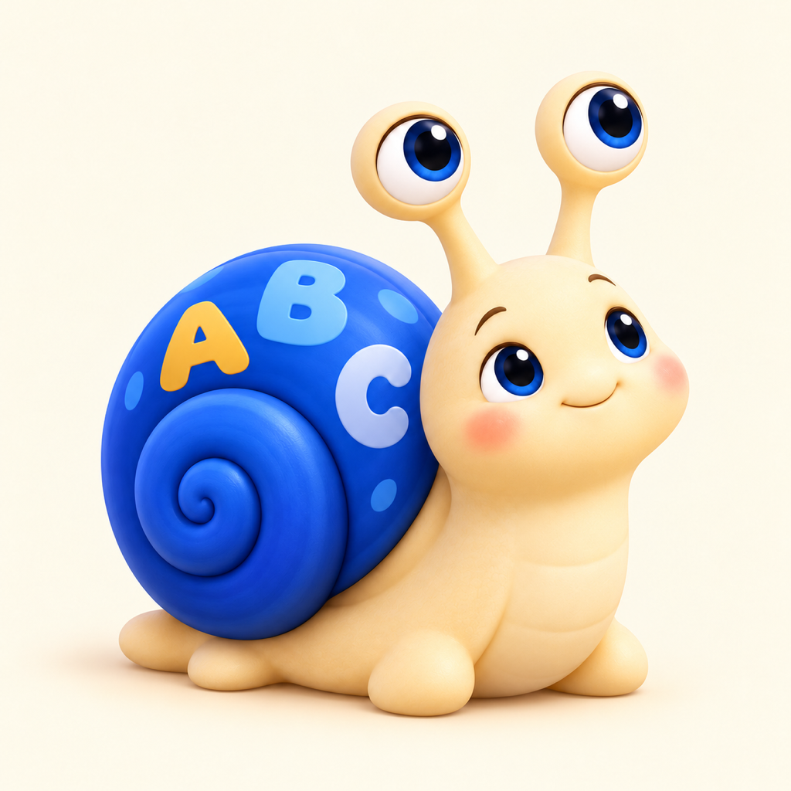
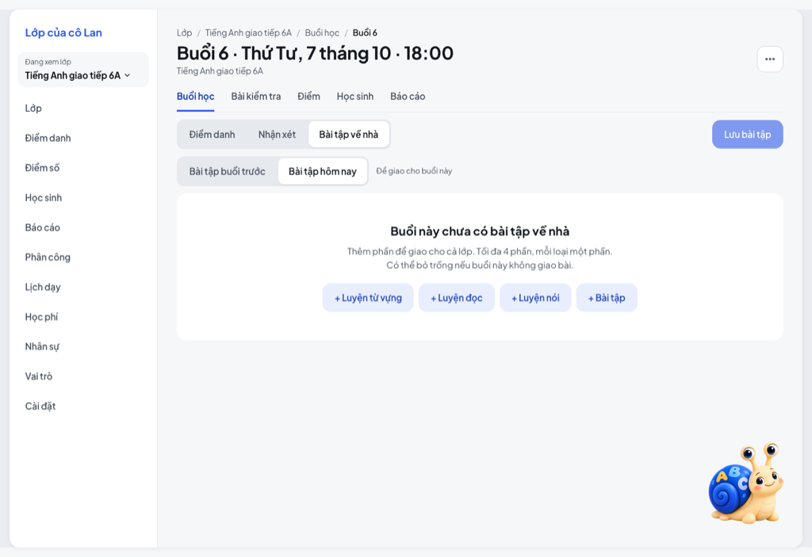
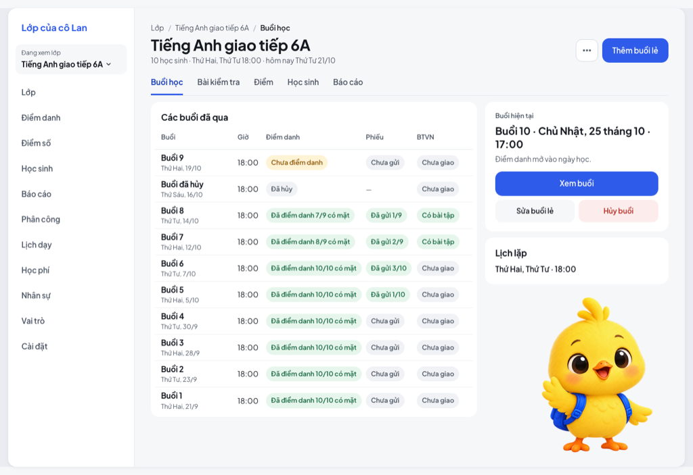
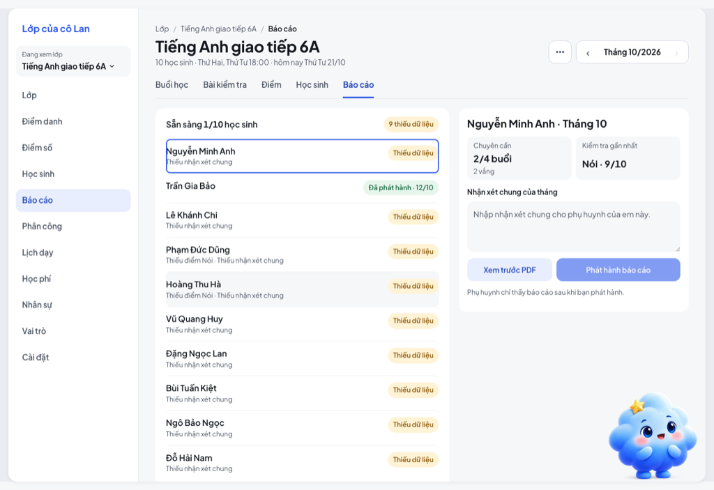

Mascot v2 · 3 hướng concept
Ảnh do AI tạo, chưa rà nhãn hiệu/bản quyền. Xem proposal.md và research.md.
Ốc Bi
Ốc sên con, vỏ xanh có chữ A-B-C. Chậm mà chắc, kiên nhẫn.

Chính
Vui / khen
Động viên khi lỗi
Đang chờ / trống
Thử trên màn appHồ sơ · Prompt
Mít
Gà con vàng đeo cặp xanh. Vui, tò mò, hay vỗ cánh.
ChínhVui / khenĐộng viên khi lỗiĐang chờ / trống
Thử trên màn app Hồ sơ · Prompt
Mây Sao
Cục mây mềm, sao vàng trên đầu. Hiền, toả sáng khi tiến bộ.
ChínhVui / khenĐộng viên khi lỗiĐang chờ / trống
Thử trên màn app Hồ sơ · Prompt